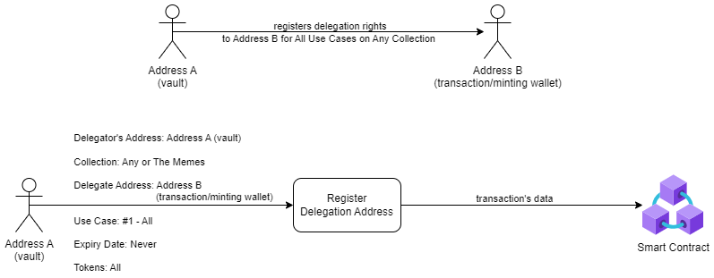
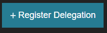

Delegation refers to the process of allowing another wallet to utilize the utilities that come
with an NFT without transferring the ownership of the NFT.
Simly put, you can use a delegation to allow a “hotter” wallet to take actions on behalf of a “colder” wallet.

- Go to the Delegation Center Section and click the 'Register Delegation' button.

- Complete the Register Delegation Form:
- Choose the collections for which you want to register the delegation (e.g., ‘Any Collection’ for all collections or a specific collection such as 'The Memes Collection').
- Enter the delegation address (e.g., a hot wallet address for minting).
- Select a specific use case for the delegation (e.g., '#1 All').
- Choose an expiry date (select 'Never' if you don't want the delegation to expire).
- Specify if the delegation pertains to all tokens owned by the delegator or just a specific token ID (e.g., 'All').
- Click the 'Submit' button and execute the transaction.